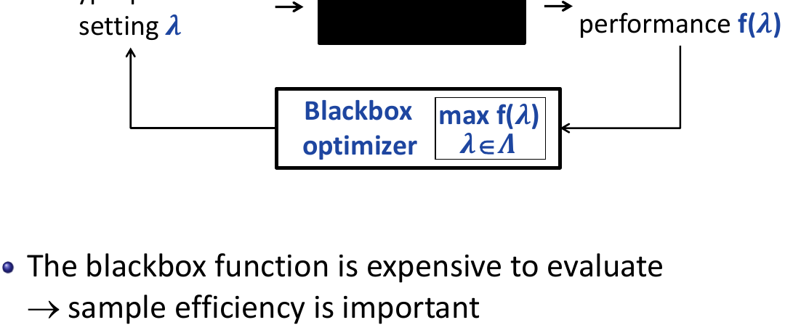
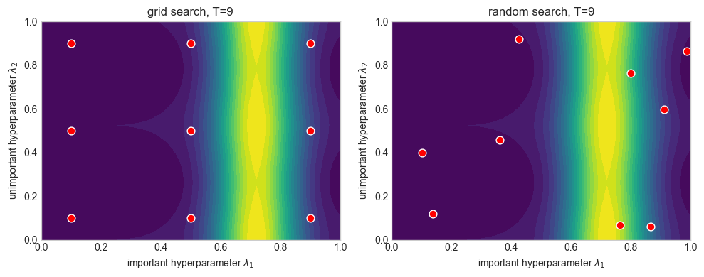
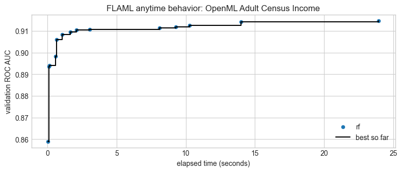
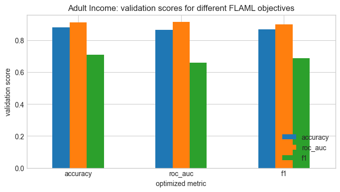
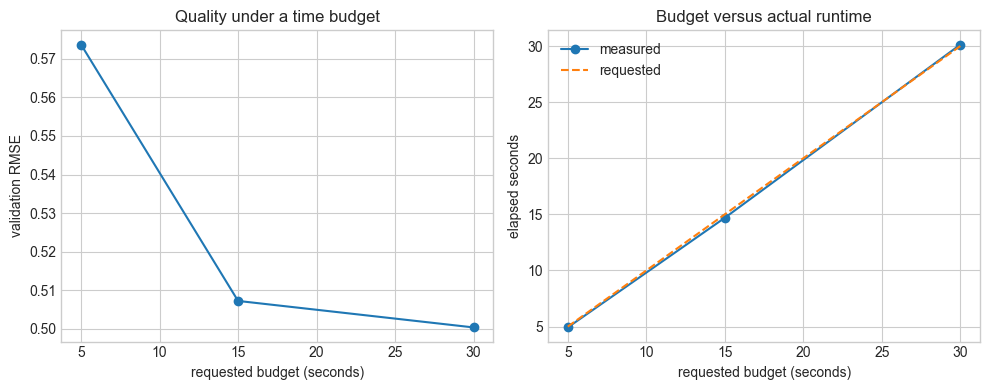

AutoML
Data-Centric AI (Module II)
Matteo Francia
DISI — University of Bologna
m.francia@unibo.it
The Problem: Hyperparameter Optimization
A learning algorithm fits parameters (for example, regression coefficients) from data.
Hyperparameters configure that fitting process: regularization strength, tree depth, or learning rate. We must choose them before fitting each candidate.
Given training data \(D_{\mathrm{tr}}\), a fixed learning algorithm \(A\), and a search space \(\Lambda\), hyperparameter optimization (HPO) solves
\[\lambda^* \in \arg\min_{\lambda\in\Lambda} f(\lambda), \qquad
f(\lambda)=\mathcal{L}_{D_{\mathrm{val}}}\!\left(A_\lambda(D_{\mathrm{tr}})\right).\]
Here \(\mathcal L\) is a validation loss; for ROC AUC we can minimize \(1-\mathrm{AUC}\).
- The optimizer is usually an expensive, noisy black box: evaluating it can require training a model.
HPO as an Optimizer–Learning-System Loop

Optimizer proposes a configuration; the learning system trains and validates it and returns a loss. Source: Hutter and Vanschoren AutoML tutorial.
The learning system fits model parameters.
| Logistic regression |
regularization strength C |
positive continuous, often searched on a log scale |
| Random forest |
number of trees, leaf size |
integer |
| Gradient boosting |
learning rate, leaf count, regularization |
mixed continuous and integer |
The optimizer changes hyperparameters: the distribution and bounds encode assumptions, a poor search space can defeat any optimizer. - Sample efficiency asks how much validation improvement we obtain per expensive evaluation. - Cost efficiency also accounts for unequal evaluation times.
Define the Evaluation Before Searching
Choose target, metric, split strategy, and hyperparameter ranges before running the optimizer.
- For \(K\)-fold cross-validation on the development data, use \(\widehat f(\lambda)=\frac{1}{K}\sum_{k=1}^{K} \mathcal L_{D_k}\!\left(A_\lambda(D_{-k})\right).\)
No-leakage: fit scaling, imputation, feature selection, and resampling inside each training fold.
- Use group or temporal splits when the application requires them.
Classification Dataset
The first real dataset is Adult Census Income from the UCI repository, loaded through OpenML. It includes:
- mixed numerical and categorical variables, missing values, class imbalance, a socially sensitive target.
| 0 |
19 |
Self-emp-not-inc |
30800 |
10th |
6 |
Married-spouse-absent |
Adm-clerical |
Unmarried |
Amer-Indian-Eskimo |
Female |
0 |
0 |
40 |
United-States |
<=50K |
| 1 |
45 |
Private |
26781 |
HS-grad |
9 |
Married-civ-spouse |
Farming-fishing |
Husband |
Amer-Indian-Eskimo |
Male |
0 |
0 |
40 |
United-States |
<=50K |
| 2 |
47 |
Private |
431515 |
Assoc-voc |
11 |
Married-civ-spouse |
Craft-repair |
Husband |
White |
Male |
0 |
0 |
40 |
United-States |
>50K |
| 3 |
23 |
Private |
45713 |
Some-college |
10 |
Never-married |
Craft-repair |
Other-relative |
White |
Male |
0 |
0 |
40 |
United-States |
<=50K |
| 4 |
53 |
Local-gov |
175897 |
HS-grad |
9 |
Married-civ-spouse |
Craft-repair |
Husband |
White |
Male |
0 |
0 |
40 |
United-States |
<=50K |
income
<=50K 0.756
>50K 0.244
Name: target_share, dtype: float64
Rows: 8000
Features: 14
Numerical features: 6
Categorical features: 8
Positive class share: 0.244
Manual Classification Baseline
We build a baseline with explicit preprocessing:
- numeric features are scaled;
- categorical features are one-hot encoded;
- logistic regression predicts the income label.
Evaluate this baseline on the validation partition. The following grid/random candidates fitting the pipeline inside each CV training fold.
Code
classification_preprocess = ColumnTransformer(
transformers=[
("num", StandardScaler(), numeric_cls),
("cat", make_one_hot_encoder(), categorical_cls),
]
)
classification_baseline = Pipeline(
steps=[
("preprocess", classification_preprocess),
("classifier", LogisticRegression(max_iter=2000, random_state=RANDOM_STATE)),
]
)
classification_baseline.fit(X_cls_train, y_cls_train)
classification_baseline_scores = evaluate_classifier(classification_baseline, X_cls_val, y_cls_val)
classification_baseline_scores
{'accuracy': 0.86625, 'roc_auc': 0.9082475100656918, 'f1': 0.6852941176470588}
Why Can Random Search Work So Well?
If only one of two hyperparameters matters, a 3 × 3 grid spends nine trials on only three values of the important parameter.
- Nine continuous random samples typically explore nine distinct values.
- The advantage grows when a high-dimensional space has only a few influential dimensions.
Let a useful region have probability mass \(p\) under the sampling distribution (Bergstra and Bengio 2012). With independent trials
\[P(\text{at least one useful configuration in }N\text{ trials})=1-(1-p)^N.\]
- For \(p=0.05\), 59 trials give about a 95% chance of hitting that region.
- This is a sampling calculation, not a guarantee of generalization or of finding the global optimum.
Visualizing Effective Dimensionality
The probability depends on the region’s mass under the sampling distribution.
| 20 |
64% |
18% |
| 60 |
95% |
45% |
| 300 |
>99.9% |
95% |
The example depends strongly on the first coordinate. Compare a fixed nine-point grid with 1,000 repetitions of nine random trials.
Grid (9 trials, 3 distinct l1 values): loss = 0.803. Random (9 trials, 9 distinct l1 values): median loss = 0.096
Random search beats the grid in 98% of the repetitions

Explain the Search Results
How many distinct C values did each method try? Which search spent more time? Does the best CV score agree with the external validation score? Explain why this experiment illustrates search behavior without proving a universal ranking of methods.
The next experiment makes the dimensionality issue more visible by varying four boosting hyperparameters. It supplements the compact logistic-regression example.
Beyond Random Search: Learning Where to Search
Bayesian optimization fits a surrogate to observed configuration/loss pairs and uses an acquisition function to balance exploring uncertain regions with exploiting promising ones. See Snoek et al. (2012).
SMAC uses random-forest surrogates for algorithm configuration, including categorical and conditional choices; see Hutter et al. (2011). Evolutionary and local-search approaches instead modify candidate configurations. These methods use search history, unlike independent random sampling.
References: (Snoek et al. 2012; Hutter et al. 2011).
Spending the Budget: Adaptation and Fidelity
Adaptive search uses previous evaluations to choose later candidates; Bayesian optimization is one approach. Multi-fidelity search first uses cheaper approximations and then spends more resources on promising candidates.
For example, successive halving repeatedly removes weak candidates while increasing resources for survivors. Li et al. (2018), Hyperband combine random configurations with adaptive resource allocation and early stopping.
Low-fidelity rankings can be misleading: a model that learns slowly may be discarded too early. FLAML uses its own cost-aware search and resource allocation; it should not be described as simply running Hyperband.
References: (Li et al. 2018).
Multi-Fidelity Search
A multi-fidelity strategy evaluates many configurations cheaply, then spends more resources on promising ones.
Fidelity Means Resource Level
| fewer rows |
more rows |
| fewer trees |
more trees |
| fewer epochs |
more epochs |
| shorter training |
longer training |
FLAML’s design is in the same spirit: good anytime behavior matters because the search may be stopped by a fixed budget.
Successive Halving, Hyperband, and BOHB
Jamieson and Talwalkar (2016) study allocating resources to identify promising candidates. In successive halving with reduction factor 3:
| 0 |
27 |
1 unit |
27 units |
| 1 |
9 |
3 units |
27 units |
| 2 |
3 |
9 units |
27 units |
| 3 |
1 |
27 units |
27 units |
Hyperband varies the initial breadth/resource tradeoff across halving brackets. BOHB (Falkner et al., 2018) combines model-based configuration sampling with Hyperband-style allocation. Constant work per round is an idealization: actual training cost need not grow linearly with resource, and implementations may refit promoted candidates.
References: (Jamieson and Talwalkar 2016; Falkner et al. 2018).
Budget Questions
- How many initial configurations and how many candidate/fidelity evaluations did halving use?
- How do its actual runtime and validation score compare with grid/random search?
- Which boosting hyperparameters increase training cost?
- When could early rankings on a small sample discard the eventual best candidate?
- Why does the grid’s arbitrary enumeration order affect its anytime curve?
What Is AutoML?
Automated Machine Learning (AutoML) automates choices in constructing and evaluating an ML solution, within a user-defined task, search space, metric, and budget. Depending on the system, these choices include preprocessing, features, learning algorithms, hyperparameters, and ensembles.
HPO fixes the learning algorithm and tunes its settings. AutoML can also choose the algorithm and parts of the pipeline. Humans still define success, admissible data, evaluation design, and operational constraints.
The next formalization captures a central AutoML subproblem: choosing a learner and its conditional hyperparameters together.
References: (Hutter et al. 2019).
CASH: Combined Algorithm Selection and Hyperparameter Optimization
Let \(\mathcal A=\{A_1,\ldots,A_M\}\) be candidate algorithms and \(\Lambda_a\) the hyperparameter space of \(A_a\). The CASH problem is
\[ (a^*,\lambda^*)\in\arg\min_{a\in\{1,\ldots,M\},\;\lambda\in\Lambda_a}
\frac{1}{K}\sum_{k=1}^{K}\mathcal L_{D_k}\!\left(A_{a,\lambda}(D_{-k})\right). \]
Its domain is a conditional union \(\bigcup_a\{a\}\times\Lambda_a\), rather than one rectangular grid. A root hyperparameter selects the learner, activating only its associated space \(\Lambda_a\). A forest activates tree-related settings; logistic regression activates regularization settings. A practical solver approximates this objective under a resource budget.
Thornton et al. (2013), Auto-WEKA: Combined Selection and Hyperparameter Optimization of Classification Algorithms introduced this formulation. CASH is the algorithm-selection problem; computation caching is a separate implementation technique.
References: (Thornton et al. 2013).
Two AutoML Systems: auto-sklearn and FLAML
| auto-sklearn |
Bayesian optimization of scikit-learn pipelines, meta-learning from earlier datasets, ensemble construction |
Shows how CASH can include preprocessing and reuse experience |
| FLAML |
Cost-aware learner selection, hyperparameter search, and sample-size allocation |
Makes search under short time budgets easy to demonstrate |
Read Feurer et al. (2015), Efficient and Robust Automated Machine Learning and Wang et al. (2021), FLAML: A Fast and Lightweight AutoML Library.
We use FLAML below, retaining the Adult Income and California Housing workflow. This is a teaching demonstration, not a benchmark establishing a winner between libraries.
References: (Feurer et al. 2015; Wang, Wu, Weimer, et al. 2021).
FLAML: What Makes Search Economical?
FLAML coordinates learner selection with the cost and expected benefit of further search. Low-cost initial configurations and cost-related settings help it start cheaply, while sample size can serve as another resource dimension.
Cost-Frugal Optimization (CFO), Wu et al. (2021) uses randomized local search starting from inexpensive configurations. BlendSearch, Wang et al. (2021) blends local and global search. Search and resampling behavior depend on configuration and version: this lab explicitly fixes the holdout split and learner lists.
Both auto-sklearn and FLAML offer configurable behavior. Avoid interpreting the comparison as “ensembles versus single models” or a guaranteed accuracy ranking: FLAML also supports optional ensembling.
References: (Wu et al. 2021; Wang, Wu, Huang, et al. 2021).
auto-sklearn versus FLAML
| Search scope |
Learners and preprocessing in a fixed template |
Learners and their conditional settings in our example |
| Optimization |
SMAC-based Bayesian optimization |
Cost-frugal local search / BlendSearch |
| Prior knowledge |
Meta-learning and initial portfolios |
Low-cost initial configurations |
| Resource allocation |
Successive halving in version 2.0 |
Cost-aware learner choice and sample-size allocation |
| Typical output |
Ensemble of evaluated pipelines |
Best model; optional ensembling |
These describe the cited systems and their configurable behavior (Feurer et al. 2015, 2022; Wang, Wu, Weimer, et al. 2021). They do not establish an accuracy ranking. Our lab fixes holdout validation, learner lists, and a short time budget so the choices remain inspectable.
CASH Search Spaces Are Conditional
| Random forest |
tree count, tree/leaf constraints |
logistic regularization strength |
| Logistic regression |
penalty and regularization strength |
forest depth and number of trees |
| Gradient boosting |
learning rate, iterations, tree constraints |
unrelated learners’ settings |
The representation is a conditional tree or graph, not an unrestricted Cartesian product of every learner’s settings. Inactive coordinates do not define different effective models.
CASH inherits HPO’s expensive evaluations and adds learner-level allocation: which algorithm deserves the next unit of budget? Different learners and configurations have different costs; the answer should depend on observed quality, cost, and remaining resources.
Inspect FLAML’s Conditional CASH Space
The configured learner list defines allowed algorithms; best_config_per_estimator reports learners with recorded results, which can be fewer under a tight budget. Inspect the random-forest space used in our lab, including its default and low-cost initial values.
This is an inspection of a learner’s declared space, not an exhaustive record of all settings actually visited.
Code
from flaml.automl.model import RandomForestEstimator
from flaml.automl.task.factory import task_factory
print("Allowed learners:", CLASSIFIERS)
print("Learners with results:", list(classification_automl.best_config_per_estimator))
def describe_space(space):
rows = []
for name, spec in space.items():
domain = spec["domain"]
if hasattr(domain, "categories"):
values = str(list(domain.categories))
elif hasattr(domain, "lower") and hasattr(domain, "upper"):
sampler = domain.get_sampler() if hasattr(domain, "get_sampler") else None
values = f"[{domain.lower}, {domain.upper}] ({type(sampler).__name__})"
else:
values = str(domain)
rows.append({"hyperparameter": name, "domain": values,
"init_value": spec.get("init_value"),
"low_cost_init_value": spec.get("low_cost_init_value")})
return pd.DataFrame(rows)
display(describe_space(RandomForestEstimator.search_space(
data_size=X_cls_train_flaml.shape,
task=task_factory("classification", X_cls_train_flaml, y_cls_train)
)))
Allowed learners: ['rf', 'extra_tree', 'lrl2']
Learners with results: ['rf', 'extra_tree', 'lrl2']
| 0 |
n_estimators |
[4, 2048] (_LogUniform) |
4.000000 |
4.0 |
| 1 |
max_features |
[0.1, 1.0] (_LogUniform) |
0.267261 |
NaN |
| 2 |
max_leaves |
[4, 2400] (_LogUniform) |
4.000000 |
4.0 |
| 3 |
criterion |
['gini', 'entropy'] |
NaN |
NaN |
FLAML Anytime Behavior from Its Log
Read the main classification run’s own log, which has a distinct filename from the metric-comparison runs. Plot logged validation results per learner and the overall incumbent against elapsed time. For ROC AUC, transform loss back to score with 1 - loss.
Default logs need not contain every attempted configuration; counts below describe logged records, not the total number of evaluations. Inspect a full trial log if you need complete accounting.
Code
from flaml.automl.data import get_output_from_log
log_path = f"flaml_main_classification_roc_auc_{time_budget}s.log"
time_history, best_loss_history, loss_history, config_history, _ = get_output_from_log(
filename=log_path, time_budget=float("inf")
)
learners = [record["Current Learner"] for record in config_history]
fig, ax = plt.subplots(figsize=(8, 3.5))
for learner in sorted(set(learners)):
idx = [i for i, name in enumerate(learners) if name == learner]
ax.scatter(np.asarray(time_history)[idx], 1 - np.asarray(loss_history)[idx], s=20, label=learner)
ax.step(time_history, 1 - np.asarray(best_loss_history), where="post", color="black", label="best so far")
ax.set(xlabel="elapsed time (seconds)", ylabel="validation ROC AUC", title=f"FLAML anytime behavior: {adult_source}")
ax.legend()
plt.tight_layout()
plt.show()
display(pd.Series(learners, dtype="object").value_counts().rename("logged records per learner"))
rf 14
Name: logged records per learner, dtype: int64

Classification Metrics
On Adult Income, accuracy can look good even when the model performs poorly on the minority class.
Run the same AutoML procedure with different optimization metrics and compare the validation results; choose the objective before opening the test set.
Code
def run_flaml_classification(metric="roc_auc", time_budget=time_budget):
model = AutoML()
started_at = time.time()
model.fit(
X_train=X_cls_train_flaml,
y_train=y_cls_train,
X_val=X_cls_val_flaml,
y_val=y_cls_val,
eval_method="holdout",
retrain_full=False,
estimator_list=CLASSIFIERS,
n_jobs=1,
task="classification",
metric=metric,
time_budget=time_budget,
log_file_name=f"flaml_adult_{metric}_{time_budget}s.log",
seed=RANDOM_STATE,
verbose=0,
)
elapsed = time.time() - started_at
scores = evaluate_classifier(model, X_cls_val_flaml, y_cls_val)
return {
"metric": metric,
"budget": time_budget,
"elapsed": elapsed,
"best_estimator": model.best_estimator,
"best_loss": model.best_loss,
**scores,
}
classification_metric_results = pd.DataFrame(
[run_flaml_classification(metric=m, time_budget=time_budget) for m in ["accuracy", "roc_auc", "f1"]]
)
classification_metric_results.round(3)
| 0 |
accuracy |
30 |
30.000 |
rf |
0.120 |
0.880 |
0.913 |
0.711 |
| 1 |
roc_auc |
30 |
30.037 |
rf |
0.085 |
0.866 |
0.915 |
0.659 |
| 2 |
f1 |
30 |
30.000 |
rf |
0.311 |
0.870 |
0.900 |
0.689 |
Code
fig, ax = plt.subplots(figsize=(8, 4))
classification_metric_results.set_index("metric")[["accuracy", "roc_auc", "f1"]].plot(kind="bar", ax=ax)
ax.set_title("Adult Income: validation scores for different FLAML objectives")
ax.set_xlabel("optimized metric")
ax.set_ylabel("validation score")
ax.legend(loc="lower right")
plt.xticks(rotation=0)
plt.show()

Classification Questions
- Which metric selected the strongest model for ROC AUC?
- Which metric selected the strongest model for F1?
- Which errors are more costly in this task?
- What additional fairness or governance checks would you run before deployment?
Regression Dataset: California Housing
The second real dataset is California Housing, originally derived from the 1990 US census.
The task is to predict median house value for California districts from demographic and geographic attributes.
This gives us a second AutoML setting: regression rather than classification.
Code
def load_housing_data():
try:
housing = fetch_california_housing(as_frame=True)
return housing.frame.copy(), "California Housing"
except Exception as exc:
print(f"Could not download California Housing: {exc}")
print("Falling back to the real built-in diabetes regression dataset.")
diabetes = load_diabetes(as_frame=True)
df = diabetes.frame.copy()
df = df.rename(columns={"target": "MedHouseVal"})
return df, "scikit-learn diabetes fallback"
housing_df, housing_source = load_housing_data()
print(housing_source)
display(housing_df.head())
display(housing_df.describe().T[["mean", "std", "min", "max"]].round(3))
| 0 |
8.3252 |
41.0 |
6.984127 |
1.023810 |
322.0 |
2.555556 |
37.88 |
-122.23 |
4.526 |
| 1 |
8.3014 |
21.0 |
6.238137 |
0.971880 |
2401.0 |
2.109842 |
37.86 |
-122.22 |
3.585 |
| 2 |
7.2574 |
52.0 |
8.288136 |
1.073446 |
496.0 |
2.802260 |
37.85 |
-122.24 |
3.521 |
| 3 |
5.6431 |
52.0 |
5.817352 |
1.073059 |
558.0 |
2.547945 |
37.85 |
-122.25 |
3.413 |
| 4 |
3.8462 |
52.0 |
6.281853 |
1.081081 |
565.0 |
2.181467 |
37.85 |
-122.25 |
3.422 |
| MedInc |
3.871 |
1.900 |
0.500 |
15.000 |
| HouseAge |
28.639 |
12.586 |
1.000 |
52.000 |
| AveRooms |
5.429 |
2.474 |
0.846 |
141.909 |
| AveBedrms |
1.097 |
0.474 |
0.333 |
34.067 |
| Population |
1425.477 |
1132.462 |
3.000 |
35682.000 |
| AveOccup |
3.071 |
10.386 |
0.692 |
1243.333 |
| Latitude |
35.632 |
2.136 |
32.540 |
41.950 |
| Longitude |
-119.570 |
2.004 |
-124.350 |
-114.310 |
| MedHouseVal |
2.069 |
1.154 |
0.150 |
5.000 |
Code
regression_target = "MedHouseVal" if "MedHouseVal" in housing_df.columns else "target"
X_reg = housing_df.drop(columns=[regression_target])
y_reg = housing_df[regression_target]
X_reg_dev, X_reg_test, y_reg_dev, y_reg_test = train_test_split(
X_reg,
y_reg,
test_size=0.2,
random_state=RANDOM_STATE,
)
X_reg_train, X_reg_val, y_reg_train, y_reg_val = train_test_split(
X_reg_dev, y_reg_dev, test_size=0.25, random_state=RANDOM_STATE
)
X_reg_val_flaml, _ = prepare_flaml_frame(X_reg_val, categorical_columns=[])
X_reg_train_flaml, _ = prepare_flaml_frame(X_reg_train, categorical_columns=[])
X_reg_test_flaml, _ = prepare_flaml_frame(X_reg_test, categorical_columns=[])
print(f"Rows: {len(X_reg)}")
print(f"Features: {X_reg.shape[1]}")
print(f"Target: {regression_target}")
Rows: 20640
Features: 8
Target: MedHouseVal
Manual Regression Baselines
We compare FLAML against two common baselines:
- Ridge regression: simple, fast, and linear.
- Random forest: nonlinear and stronger, but less transparent and more expensive.
Code
ridge_baseline = Pipeline(
steps=[
("scaler", StandardScaler()),
("regressor", Ridge(alpha=1.0)),
]
)
forest_baseline = RandomForestRegressor(
n_estimators=200,
min_samples_leaf=2,
random_state=RANDOM_STATE,
n_jobs=-1,
)
ridge_baseline.fit(X_reg_train, y_reg_train)
forest_baseline.fit(X_reg_train, y_reg_train)
ridge_scores = evaluate_regressor(ridge_baseline, X_reg_val, y_reg_val)
forest_scores = evaluate_regressor(forest_baseline, X_reg_val, y_reg_val)
display_scores("Ridge regression baseline", ridge_scores)
display_scores("Random forest baseline", forest_scores)
pd.DataFrame([ridge_scores, forest_scores], index=["ridge", "random_forest"]).round(3)
Ridge regression baseline
rmse : 0.728
mae : 0.533
r2 : 0.614
Random forest baseline
rmse : 0.508
mae : 0.333
r2 : 0.812
| ridge |
0.728 |
0.533 |
0.614 |
| random_forest |
0.508 |
0.333 |
0.812 |
FLAML for Regression
For regression, FLAML can optimize metrics such as RMSE, MAE, or R2.
Here we optimize RMSE and compare the selected model with the two manual baselines.
Code
regression_automl = AutoML()
regression_started_at = time.perf_counter()
regression_automl.fit(
X_train=X_reg_train_flaml,
y_train=y_reg_train,
X_val=X_reg_val_flaml,
y_val=y_reg_val,
eval_method="holdout",
retrain_full=False,
estimator_list=REGRESSORS,
n_jobs=1,
task="regression",
metric="rmse",
time_budget=time_budget,
log_file_name=f"flaml_main_regression_rmse_{time_budget}s.log",
seed=RANDOM_STATE,
verbose=1,
)
regression_elapsed = time.perf_counter() - regression_started_at
Code
print(f"Best estimator: {regression_automl.best_estimator}")
print(f"Best validation loss: {regression_automl.best_loss:.6f}")
print(f"Training time for best config: {regression_automl.best_config_train_time:.3f}s")
regression_automl.best_config
Best estimator: rf
Best validation loss: 0.500325
Training time for best config: 6.042s
{'n_estimators': 271,
'max_features': np.float64(0.4922638867287963),
'max_leaves': 1593}
Code
regression_automl_scores = evaluate_regressor(regression_automl, X_reg_val_flaml, y_reg_val)
display_scores("FLAML regression model", regression_automl_scores)
pd.DataFrame(
[ridge_scores, forest_scores, regression_automl_scores],
index=["ridge", "random_forest", "flaml"],
).round(3)
FLAML regression model
rmse : 0.500
mae : 0.338
r2 : 0.818
| ridge |
0.728 |
0.533 |
0.614 |
| random_forest |
0.508 |
0.333 |
0.812 |
| flaml |
0.500 |
0.338 |
0.818 |
Budget Experiment
Repeat FLAML on regression using budget_values from setup. All runs use the same validation partition and learner list. Record elapsed time and validation RMSE; do not choose a budget by inspecting test results.
These are independent restarts, not checkpoints of one search. Longer budgets need not yield monotonically better results because search paths and runtime vary. For a stronger experiment, repeat across seeds and report score/time variability. The budget covers each fit call; data loading and the manual baselines are additional costs.
Code
def run_flaml_regression(time_budget=time_budget, metric="rmse"):
model = AutoML()
started_at = time.time()
model.fit(
X_train=X_reg_train_flaml,
y_train=y_reg_train,
X_val=X_reg_val_flaml,
y_val=y_reg_val,
eval_method="holdout",
retrain_full=False,
estimator_list=REGRESSORS,
n_jobs=1,
task="regression",
metric=metric,
time_budget=time_budget,
log_file_name=f"flaml_housing_{metric}_{time_budget}s.log",
seed=RANDOM_STATE,
verbose=0,
)
elapsed = time.time() - started_at
scores = evaluate_regressor(model, X_reg_val_flaml, y_reg_val)
return {
"budget": time_budget,
"metric": metric,
"elapsed": elapsed,
"best_estimator": model.best_estimator,
"best_loss": model.best_loss,
**scores,
}
regression_budget_results = pd.DataFrame(
[run_flaml_regression(time_budget=b, metric="rmse") for b in budget_values]
)
regression_budget_results.round(3)
| 0 |
5 |
rmse |
4.924 |
rf |
0.574 |
0.574 |
0.413 |
0.760 |
| 1 |
15 |
rmse |
14.694 |
rf |
0.507 |
0.507 |
0.346 |
0.813 |
| 2 |
30 |
rmse |
30.129 |
rf |
0.500 |
0.500 |
0.338 |
0.818 |
Code
fig, axes = plt.subplots(1, 2, figsize=(10, 4))
axes[0].plot(regression_budget_results["budget"], regression_budget_results["best_loss"], marker="o")
axes[0].set(xlabel="requested budget (seconds)", ylabel="validation RMSE", title="Quality under a time budget")
axes[1].plot(regression_budget_results["budget"], regression_budget_results["elapsed"], marker="o", label="measured")
axes[1].plot(budget_values, budget_values, linestyle="--", label="requested")
axes[1].set(xlabel="requested budget (seconds)", ylabel="elapsed seconds", title="Budget versus actual runtime")
axes[1].legend()
plt.tight_layout()
plt.show()

Interpreting the Budget Experiment
Increasing a budget changes the search opportunity, not the task definition. Explain the observed tradeoff using validation quality, elapsed time, and selected estimator. If two budgets give similar validation scores, discuss whether the extra compute is justified.
Within one run, the best observed loss on a fixed validation objective cannot increase as more completed trials are added. This does not guarantee that independent runs, low-fidelity scores, or final test performance improve monotonically.
Budget Is a Modeling Decision
A system that is excellent after two hours may not be the best choice for an interactive workflow that allows only two minutes.
When reporting AutoML results, always state the time budget together with the chosen metric and selected model.
End-to-End Pipeline Optimization
Preprocessing Order Is a Search Decision
Giovanelli, Bilalli, and Abelló (2021), Effective data pre-processing for AutoML study transformations and combinations of transformations as pipeline prototypes (Giovanelli et al. 2021). Choosing a promising prototype comes before tuning the operators that instantiate it.
Distinguish three decisions:
- Structure: which step types are present and in which order.
- Operators: which implementation fills each step.
- Hyperparameters: how each operator and learner is configured.
For example, feature selection can change the neighborhood on which later resampling operates; reversing the steps changes the data seen by the selector. Both choices must still fit selection and resampling strictly inside training folds.
Exercise: propose two admissible orders for feature selection and resampling, identify an assumption behind each, and explain how you would compare them under one budget and evaluation protocol.
AGE-ML: Specifications for Data-Centric AutoML
Matteini et al. (ADBIS 2026), Agentic Architecture for Data-Centric AutoML presents AGE-ML, a specification-driven architecture. Human-readable assumptions, constraints, evaluation criteria, and preferences define a pipeline search space; an LLM agent loop generates and validates pipelines and provides structured explanations.
The linked conference abstract emphasizes controllability, traceability, reproducibility, and iterative refinement. Use it as an architectural research reference; it does not provide enough detail on that page to reproduce the experiments or infer numerical improvements.
Discussion: write a specification for our classification task: target, permitted features, missing-value policy, split protocol, objective, budget, and explanation requirements. Which parts could a validator check automatically?
References: (Matteini et al. 2026).
Pipeline Questions
- Which requirements constrain the data, and which constrain the model or evaluation?
- Which proxies could retain information about an excluded attribute?
- Write two HAMLET-style admissibility or ordering rules for preprocessing.
- What would an agent need to inspect to generate a valid pipeline without leakage?
- How would experiment tracking show that a pipeline complied with its specification?
Design Exercise: Automate One More Decision
Starting from our FLAML example, choose one currently manual operation: missing-value handling, encoding, feature selection, or resampling.
- Define two admissible alternatives and their conditional parameters.
- Explain how each alternative is fitted without leaking validation data.
- State a metric, a total budget, and one human constraint.
- Specify the evidence needed to accept, explain, and reproduce the selected pipeline.
- Use HAMLET, MLZero, or AGE-ML to explain how a human could inspect or revise that decision.
A design and pseudocode are sufficient; implementing an agent system is outside this lab’s practical scope.
Inspect, Freeze, Then Evaluate
Inspect best_estimator, best_config, best_loss, and the saved logs. Explain which parts of the search were fixed by us and which FLAML selected. Freeze the two main runs before executing the final test cell below.
The earlier baseline and search tables contain validation scores. The final table contains test scores for the two pre-specified FLAML runs. Keep that distinction explicit in the report.
Reproducibility Checklist
- dataset name and version;
- feature preprocessing and missing-value handling;
- training/validation/test splits and random seed;
- task type and optimized metric;
- requested time budget and measured elapsed time;
- library versions and available hardware/parallelism;
- selected learner;
- best validation loss;
- best configuration;
- final test-set metrics.
AutoML is most useful when its choices are inspectable and reproducible.
Code
# Final evaluation: run only after fixing the metric, search space, and budget.
# Report these two pre-specified main runs; do not select another run from test scores.
classification_final_scores = evaluate_classifier(classification_automl, X_cls_test_flaml, y_cls_test)
regression_final_scores = evaluate_regressor(regression_automl, X_reg_test_flaml, y_reg_test)
summary = pd.DataFrame([
{"task": "classification", "dataset": adult_source, "optimized_metric": "roc_auc",
"budget_seconds": time_budget, "elapsed_seconds": classification_elapsed, "best_estimator": classification_automl.best_estimator,
"validation_loss": classification_automl.best_loss, **classification_final_scores},
{"task": "regression", "dataset": housing_source, "optimized_metric": "rmse",
"budget_seconds": time_budget, "elapsed_seconds": regression_elapsed, "best_estimator": regression_automl.best_estimator,
"validation_loss": regression_automl.best_loss, **regression_final_scores},
])
summary.round(3)
| 0 |
classification |
OpenML Adult Census Income |
roc_auc |
30 |
30.016 |
rf |
0.085 |
0.854 |
0.902 |
0.645 |
NaN |
NaN |
NaN |
| 1 |
regression |
California Housing |
rmse |
30 |
30.064 |
rf |
0.500 |
NaN |
NaN |
NaN |
0.505 |
0.334 |
0.806 |
What AutoML Automates
AutoML can automate repetitive parts of modeling:
- trying candidate learners;
- allocating trials;
- tuning hyperparameters;
- returning a strong baseline.
What AutoML Does Not Automate
AutoML does not remove the data-science responsibility for:
- problem formulation;
- target definition;
- leakage checks;
- fairness assessment;
- deployment monitoring;
- deciding whether a model should be used at all.
A good AutoML report explains both the machine-selected model and the human choices that shaped the search.
Final Exercise: AutoML Audit Memo
Write a one-page audit memo for one FLAML model from this notebook.
Your memo should help a reader decide whether the model is a useful baseline, a deployable model, or only an exploratory result.
Audit Memo Prompts
Answer these questions:
- What exact task, metric, and time budget did FLAML optimize, and how long did it actually run?
- Which model did FLAML select, and how did it compare with the manual baseline and grid/random search on validation data?
- What evidence suggests the result is reliable, and how was the test set kept sealed?
- What evidence is still missing before deployment?
- Which human modeling choice had the largest effect on the conclusion?
Deliverables
Submit a short lab report with the core experimental results and your interpretation.
Extension Tasks
Choose one if you finish early:
- Add
estimator_list=["lgbm", "xgboost", "rf", "extra_tree"] after installing the optional learners.
- Save and reload an AutoML run with
automl.pickle() and AutoML.load_pickle().
- Repeat the classification task with a fairness-sensitive subgroup comparison.
- Add a Bayesian-optimization baseline under the same resource accounting.
- Compare a single-learner FLAML run with the multi-learner run using logged curves.
- Extend the specification demo with a fold-safe imputation or resampling choice; express it as a custom pipeline objective for
flaml.tune.
More Extension Tasks
- Create a custom metric that penalizes false negatives more heavily than false positives.
- Repeat the budget experiment across several seeds and report score/runtime variability.
- Repeat the regression budget experiment with MAE instead of RMSE.
- Summarize how the selected learner changes as the budget increases.
References
Bergstra, James, and Yoshua Bengio. 2012. “Random Search for Hyper-Parameter Optimization.” Journal of Machine Learning Research 13 (10): 281–305.
Falkner, Stefan, Aaron Klein, and Frank Hutter. 2018. “BOHB: Robust and Efficient Hyperparameter Optimization at Scale.” Proceedings of the 35th International Conference on Machine Learning (ICML), 1437–46.
Fang, Haoyang, Boran Han, Nick Erickson, et al. 2025.
“MLZero: A Multi-Agent System for End-to-End Machine Learning Automation.” Advances in Neural Information Processing Systems.
https://neurips.cc/virtual/2025/poster/119504.
Feurer, Matthias, Katharina Eggensperger, Stefan Falkner, Marius Lindauer, and Frank Hutter. 2022. “Auto-Sklearn 2.0: Hands-Free Automl via Meta-Learning.” Journal of Machine Learning Research 23 (261): 1–61.
Feurer, Matthias, Aaron Klein, Katharina Eggensperger, Jost Springenberg, Manuel Blum, and Frank Hutter. 2015. “Efficient and Robust Automated Machine Learning.” Advances in Neural Information Processing Systems 28: 2962–70.
Francia, Matteo, Joseph Giovanelli, and Giuseppe Pisano. 2023. “HAMLET: A Framework for Human-Centered AutoML via Structured Argumentation.” Future Generation Computer Systems 142: 182–94.
Giovanelli, Joseph, Besim Bilalli, and Alberto Abelló Gamazo. 2021. “Effective Data Pre-Processing for AutoML.” Proceedings of the 23rd International Workshop on Design, Optimization, Languages and Analytical Processing of Big Data (DOLAP): Co-Located with the 24th International Conference on Extending Database Technology and the 24th International Conference on Database Theory (EDBT/ICDT 2021): Nicosia, Cyprus, March 23, 2021, 1–10.
Hutter, Frank, Holger H. Hoos, and Kevin Leyton-Brown. 2011. “Sequential Model-Based Optimization for General Algorithm Configuration.” Learning and Intelligent Optimization (LION 5), LNCS, vol. 6683: 507–23.
Hutter, Frank, Lars Kotthoff, and Joaquin Vanschoren, eds. 2019. Automated Machine Learning: Methods, Systems, Challenges. The Springer Series on Challenges in Machine Learning. Springer.
Jamieson, Kevin, and Ameet Talwalkar. 2016. “Non-Stochastic Best Arm Identification and Hyperparameter Optimization.” Proceedings of the 19th International Conference on Artificial Intelligence and Statistics (AISTATS), 240–48.
Li, Lisha, Kevin Jamieson, Giulia DeSalvo, Afshin Rostamizadeh, and Ameet Talwalkar. 2018. “Hyperband: A Novel Bandit-Based Approach to Hyperparameter Optimization.” Journal of Machine Learning Research 18 (185): 1–52.
Matteini, Mattia, Matteo Magnini, Matteo Francia, Giovanni Ciatto, and Andrea Omicini. 2026.
“Agentic Architecture for Data-Centric AutoML.” Advances in Databases and Information Systems (ADBIS) (Orl
éans, France).
https://adbis26.sciencesconf.org/753016.
Olson, Randal S., Nathan Bartley, Ryan J. Urbanowicz, and Jason H. Moore. 2016. “Evaluation of a Tree-Based Pipeline Optimization Tool for Automating Data Science.” Proceedings of the Genetic and Evolutionary Computation Conference (GECCO), 485–92.
Snoek, Jasper, Hugo Larochelle, and Ryan P. Adams. 2012. “Practical Bayesian Optimization of Machine Learning Algorithms.” Advances in Neural Information Processing Systems 25.
Thornton, Chris, Frank Hutter, Holger H Hoos, and Kevin Leyton-Brown. 2013. “Auto-WEKA: Combined Selection and Hyperparameter Optimization of Classification Algorithms.” Proceedings of the 19th ACM SIGKDD International Conference on Knowledge Discovery and Data Mining, 847–55.
Wang, Chi, Qingyun Wu, Silu Huang, and Amin Saied. 2021. “Economic Hyperparameter Optimization with Blended Search Strategy.” International Conference on Learning Representations (ICLR).
Wang, Chi, Qingyun Wu, Markus Weimer, and Erkang Zhu. 2021. “FLAML: A Fast and Lightweight AutoML Library.” Proceedings of Machine Learning and Systems (MLSys) 3: 434–47.
Wu, Qingyun, Chi Wang, and Silu Huang. 2021. “Frugal Optimization for Cost-Related Hyperparameters.” Proceedings of the AAAI Conference on Artificial Intelligence 35: 10347–54.
Practical Resources
The bibliography uses refs/refs.bib and Quarto/Pandoc citations. Research figures retain their source attribution to the Hutter–Vanschoren tutorial and the cited papers. Direct paper links remain in the explanations for notebook readers.